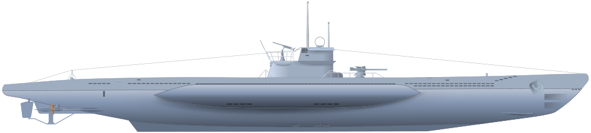

U-boat klasy VIIC
Typ VII – seria kilku typów niemieckich okrętów podwodnych z okresu II wojny światowej. Potoczne określenie serii U-Bootów, nigdy w rzeczywistości nieistniejącego typu VII. Wszystkie jednostki serii VII, błędnie nazywanej przez niektórych autorów „typem VII”, należały w Kriegsmarine do odrębnych, różniących się od siebie konstrukcyjnie typów VIIA, VIIB, VIIC, VIID, VIIE oraz VIIF.
Głównym celem stawianym przed projektantami nowej wersji okrętu było "znalezienie" miejsca na nowe wyposażenie elektroniczne – aktywnego sonaru S-Gerät. Przedłużenie kadłuba o jedną wręgę (60 cm) umożliwiło nie tylko zainstalowanie nowej aparatury, lecz także na powiększenie zbiorników paliwowych (zwiększenie zasięgu) oraz dołożenie kolejnych zbiorników szybkiego zanurzania. Maksymalna głębokość zanurzenia wynosiła 280 m, w praktyce kadłub pozwalał na osiągnięcie większych głębokości. Do służby weszło 568 jednostek tego typu. Dowództwo przeprowadziło (raczej nieudaną) próbę zmodyfikowania kilku jednostek tego typu na tzw. U-flak (przeciwlotnicze U-Booty). U-441, U-256, U-621 i U-951 uległy modyfikacjom – na pokładzie zainstalowano 2 poczwórne działka plot. Flakvierling oraz eksperymentalne działko automatyczne 37 mm. Celem tych modyfikacji było przystosowanie okrętów do służby eskortowej w Zatoce Biskajskiej. U-flak miały eskortować inne okręty podwodne przechodzące przez zatokę na powierzchni, z pełną prędkością. Eksperymentowano nawet, bez powodzenia, z baterią 86 mm rakiet przeciwlotniczych odpalanych z zanurzenia.